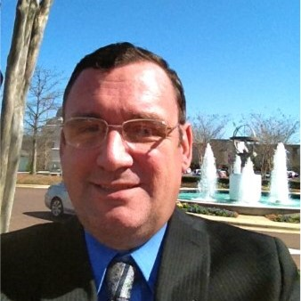
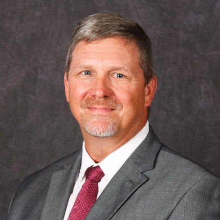
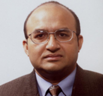

Project Manager
melissaf@mil.API.fit
Melissa Flinn earned a B.S. in Biomechanical Engineering from Marquette University with minors in mechanical engineering and biology. She has been working in market research as a project manager conducting studies with advanced analytical components for nearly 10 years. She currently leads a team of research staff to ensure deliverables and all milestones are hit as well as oversees projects to make sure that objectives are met and results are communicated in an actionable way.
Principal Investigator
rodneys@mil.API.fit
Dr. Rodney Sparapani, PhD, is the Executive Vice President for Research at Transformation.run and an Assistant Professor of Biostatistics at the Medical College of Wisconsin (MCW) Milwaukee campus. Rodney has developed a research program in Bayesian machine learning at MCW with a particular emphasis in biomedical research. Mainly, his research interests involve artificial intelligence/machine learning, Bayesian nonparametrics, big data and the surrounding computational challenges. He is co-author of the Bayesian Additive Regression Trees (BART) package which is free, open-source software for Bayesian machine learning: https://cran.r-project.org/package=BART. He has been invited to present at major international statistical meetings in New York (2002), Hawaii (2014) and Sardinia, Italy (2016) as well as presenting at major national/international meetings: San Diego (2012), Montreal (2013), Madison WI (2016), Chicago (2016), Storrs CT (2017), Houghton MI (2017) and Milwaukee (2017). He has recently published a first author article in the journal Statistics in medicine on Bayesian machine learning with survival analysis: http://dx.doi.org/10.1002/sim.6893. He has 36 other publications in high impact journals such as NEJM, JAMA, Lancet, Journal of Clinical Oncology, Medical Care, Cancer, Circulation, Statistical Methods in Medical Research and the Journal of Computational & Graphical Statistics.

Chief Executive Officer
andyp@mil.API.fit
U.S. Air Force Veteran with over 30 years experience as an executive leader and a proven record of building cohesive, high-production organizations, developing innovative solutions to challenging problems while cutting costs and leading complex projects to exceptional results. I seek challenging opportunities where I can use my strong leadership ability, education, and organizational skills to exceed the institution’s goals while maximizing my potential and helping others develop to their potentials. Currently manages a consulting firm allowing others to reinvent themselves to reach their full potential. Vast experience includes human resources, recruiting and retention, logistics, volunteer coordination, marketing, information technology, security and engineering. Current emphasis is data science.
Education:
University of Villanova
Master Certificate in IS/IT Program Management Six Sigma Green Belt
Six Sigma Black Belt
Air University
Masters in Strategic Studies

Chief Financial Officer
mitchm@mil.API.fit
Mitchell E. (Mitch) Maddox is Chief Financial Officer for Transformation .Run responsible for the
startup and execution of multiple businesses and structuring business relationships with domestic and
international clientele as principle advisor for cyber security operations and consultant for IT related
businesses. As CFO, responsibilities include developing sound business practices inline with US tax
code and business development, infusing capital into startup businesses through investment and loan
applications for every need of a start up company.
Lt Col Maddox entered the Air Force in 1991 with a commission from the
AFROTC program at Alabama State University, Montgomery AL. Some of his
prior assignments, CJ 6 Director for Afghanistan National Prison Operations,
Deputy Group Commander, 55 Mission Support Group, Offutt AFB NE, and 2d Air Postal Squadron
Commander, Ramstein AB Germany.
Chief Transformation Engineer
jasonl@mil.API.fit
Jason Lind has been on the bleeding edge of technology and organizational theory since he became an equity partner at GeoCities in 1996. He started at Marquette University majoring in Electrical and Computer Engineering with a minor in Political Science as a Sophomore at age 16 in 2001. Leaving with Junior Standing at the end of 2002 he began a software consulting practice that immediately took him to the F500 with Fortis Health Insurance where Naval Captain Roger J Jones encouraged him to enlist in the USAF. After passing Basic Military Training in 2004, Jason entered a long avionics technical school and after 11 months of training the USAF and him mutually parted ways with a General Under Honorable discharge.
In 2008 Jason co-founded Lind Innovation, first as President / Chief Software Architect and then starting in 2011 as Executive Vice President / Chief Strategy Officer, to be a beacon of innovation in an increasingly risk adverse world and achieved significant success consulting in the F500 community with a specific emphasis on Financial Institutions. Along the way he co-founded several major organizations including NexDevices: a consumer focused hardware packaging and software development firm to create next-generation consumer experiences. In 2018 Jason co-founded Transformation.run, as the Executive Vice President for Transformation, which has rapidly stood up as a formable organization on the marketplace.
The founder of the concept of Transformation Engineering, Jason has a differentiating wide and deep combination of technical and business skill sets that are an asset to any organization or project.
Psychology Consultant
zfranco@mcw.edu
Zeno Franco, PhD, is an associate professor in the Department of Family & Community Medicine at the Medical College of Wisconsin. Dr. Franco’s research focuses primarily on improving strategies for community-based interventions with US military veterans who have experienced combat trauma. He recently published an article on veterans’ perceptions of accessing VA services in the journal Progress in Community Partnerships for Health. Dr. Franco’s current work centers on technology driven strategies to improve crisis response for military veterans experiencing psycho-social issues in real-time. These approaches focus on smartphone and sensor driven systems. Dr. Franco is a former US Department of Homeland Security Fellow (03-06), interned with ANSER Analytics in Joint War Fighting & National Strategies divisions, and has extensive experience with military C2 simulation systems.

Systems Consultant
sheikh.ahamed@mu.edu
Sheikh Iqbal Ahamed is a professor of Computer Science and director of Ubicomp lab (www.mscs.mu.edu/~ubicomp) at Marquette University, USA. He is a senior member of the IEEE, ACM, and the IEEE Computer Society. He completed his Ph.D. in Computer Science from Arizona State University, USA in 2003. His research interests include mHealth, security and privacy in pervasive computing, affective computing, middleware for ubiquitous/pervasive computing. Currently, he has over 1 million dollar research grants in mHealth area and mobile/pervasive computing area. He has a number of collaborative mHealth projects with the researchers of different universities and non-profit organizations in USA. He has successfully lead and completed a number of mHealth systems for a number NIH R01 grants. He has international mHealth projects in Bangladesh, Nepal, Taiwan and China. He has published 150+ peer reviewed journal, conference and workshop papers. He has received nine best paper/posters awards in last five years. One of them was selected the best from 325 submitted papers. Dr. Ahamed serves regularly on international conference program committees in software engineering and pervasive computing such as COMPSAC 13, COMPSAC 12, PERCOM 08, and SAC 08. He is the Workshops Chair of COMPSAC 2009 and COMPSAC 2010. He has been serving as the Steering Chair of COMPSAC 2016-19. General Chair of COMPSAC 2015. He was the Program Chair of COMPSAC 2011. He was the Program Co-Chair of WPS 2009 and STPSA 2016.. He is the Guest Editor of Computer Communications Journal, Elsevier.